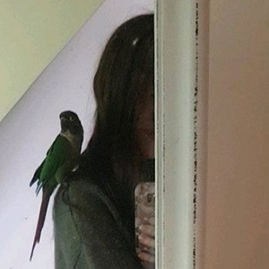

<main>
  <div class="container p-4">
        
        <h2>In the making</h2>
        <br><p>My name is Laura Hutchison, and I'm a student at the University of Dundee. I study Applied Computing, and have always enjoyed computers, but my true passions lie outside of my studies.</p>
        <p>I'm originally from the United States, although I lived in Ireland for a year before moving to Dundee and now live permanently in Scotland. I'm the oldest child of my family and unfortunately remember nothing about being an only child for a brief two years. :( </p>
        <p>I enjoy studying Medieval European culture in my free time. I have a Green Cheeked conure, picture with me to the left, named Merlin. I enjoy animals of all varieties, from hamsters and small fish all the way up to livestock.</p>
        <p>I enjoy playing role-playing games in my freetime, although I'm not as involved as I was when I was younger and had more freetime. I collect retro consoles, and currently still have a large collection sitting at my Mum's in the States. I've got to ship them over and set up a power solution due to the different voltages. It's doable!</p>
        <br>
        <h2>What do I aim for in web design?</h2>
        <br>
        <p>In designing this website, I've found a few things that I find don't work for me. (at least in the designing of this website!) <br>
          First of all is the overuse of cards currently in web design. I find them clunky, I think they look outdated. They remind me of when Google first launched Google Assistant for Android. Cards, cards, cards. While the concept of them is certainly nice, I find columns currently more aesthetically pleasing. You can still adjust content easily - your f5 button is your best friend. <br>
          Second of all was the first ideas that popped into my head as far as the theme to use on this website. It's supposed to be oriented towards our software development - but I found that entirely uninspiring and frankly, quite boring. It brings up very "masculine" themed ideas to me, or at the very least, nothing fun. <br> I love pink and frills and in the designing of this website, I thought that developing it initially around the idea of "social media management" was a good starting point. Unfortunately, pink isn't GREAT with software development. :P </p>
          <br>
        <h2>Goals for the future?</h2>
        <br>
        <p>I aim to study computational archaeology as a Master's degree sometime in the future. I think it'll be a great way to combine two interests of mine. The first career goals I had were "one of the world's top ten leading scientists in archaeology and anthropology."<br>
          I'm also finding web development an interesting field in the development of this portfolio site, and hopefully can build this as I go along.
        <p>As an end note, please have the song I have obsessively listened to in the development of this website (complete with crying. It's very emotional).</p>
        <iframe width="560" height="315" src="https://www.youtube.com/embed/X2WH8mHJnhM" frameborder="0" allow="accelerometer; autoplay; encrypted-media; gyroscope; picture-in-picture" allowfullscreen></iframe>
  </div>
</main>
